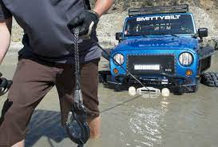

Getting Unstuck

Description
When attempting something like the Odin Project it isn't a question of
if but of when you'll get stuck. Therefore it's important to be prepared
with strategies to become unstuck. Being stuck can kill your motivation
so it's best to extricate yourself ASAP. And always remember, being stuck is
part of the process.
Ingredients
- Google
- Taking a break
- Discord
- Review
Steps
- First try googling the answer. You aren't the first person to have had
this problem.
- Maybe your problem is an insufficient grasp of material that came
before. If this is the case then review past lessons.
- If neither of those work then try taking a break. Our minds are constantly
making new connections in what is called diffuse learning.
- If you've put in a solid effort and are still stuck then ask someone for help.
This could be someone you know or through TOP discord.